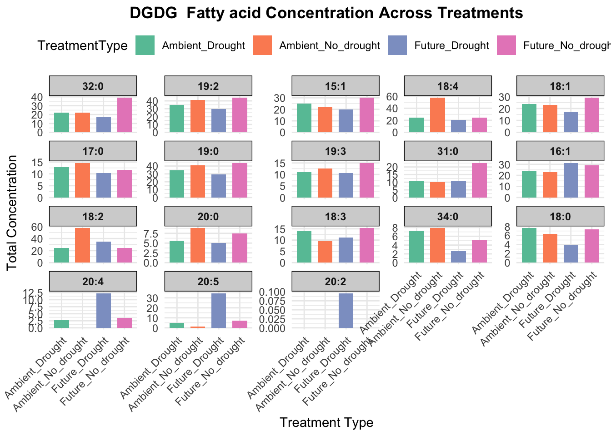

# Load necessary libraries
library(readxl)
library(dplyr)
library(tidyr)
library(ggplot2)
library(openxlsx)
library(purrr)
library(forcats)
# Step 1: Loading and Summarizing Data
# Load the data from the Excel file
file_path <- "fatty-acid-concentration.xlsx"
sheet1 <- read_excel(file_path, sheet = "Sheet1")
sheet2 <- read_excel(file_path, sheet = "Sheet2")
# Select relevant columns from Sheet2 for merging
sheet2_selected <- sheet2 %>% select(GlobalID, FAKey, FAGroupKey)
# Merge the selected columns from Sheet2 to Sheet1
sheet1_merged <- sheet1 %>% left_join(sheet2_selected, by = "GlobalID")
# Step 2: Splitting and Cleaning FAKey Parts
# Split the FAKey column wherever an underscore '_' appears
sheet1_merged <- sheet1_merged %>%
mutate(FAKey_Split = strsplit(as.character(FAKey), "_")) %>%
mutate(FAKey_Part1 = sapply(FAKey_Split, "[", 1),
FAKey_Part2 = sapply(FAKey_Split, "[", 2),
FAKey_Part3 = sapply(FAKey_Split, "[", 3),
FAKey_Part4 = sapply(FAKey_Split, "[", 4))
# Clean the FAKey parts by removing '(', ')', and anything after '+'
clean_fa_key_part <- function(part) {
if (!is.na(part)) {
part <- sub("\\+.*", "", part) # Remove anything after '+'
part <- gsub("[()]", "", part) # Remove '(' and ')'
}
return(part)
}
sheet1_merged <- sheet1_merged %>%
mutate(FAKey_Part1 = sapply(FAKey_Part1, clean_fa_key_part),
FAKey_Part2 = sapply(FAKey_Part2, clean_fa_key_part),
FAKey_Part3 = sapply(FAKey_Part3, clean_fa_key_part),
FAKey_Part4 = sapply(FAKey_Part4, clean_fa_key_part))
# Step 3: Creating a Combined FAKey File
# Keep only GlobalID and FAKey_Part1, FAKey_Part2, FAKey_Part3, FAKey_Part4
fa_key_parts <- sheet1_merged %>% select(GlobalID, FAKey_Part1, FAKey_Part2, FAKey_Part3, FAKey_Part4)
# Convert FAKey parts into long format and remove rows with NA
fa_key_parts_long <- fa_key_parts %>%
pivot_longer(cols = starts_with("FAKey_Part"), names_to = "Part", values_to = "FAKey_Part") %>%
select(-Part) %>%
filter(!is.na(FAKey_Part))
# Save the result to a new Excel file
output_file_path <- "fa_key_parts_combined_corrected.xlsx"
write.xlsx(fa_key_parts_long, output_file_path, row.names = FALSE)Fatty-acid-concentration
Seperate Fatty acid chain length for different lipid classes
Combine Fatty acid chain length with its concentration
# Load the provided Excel files
file_path_1 <- 'fa_key_parts_combined_corrected.xlsx'
file_path_2 <- 'Fig5-ALL-concentration-updated.xlsx'
# Load the data from the sheets
df_1 <- read_excel(file_path_1, sheet = 'Sheet 1')
df_2 <- read_excel(file_path_2, sheet = 'SIRIUS-STD')
# Merge the two dataframes based on the GlobalID
merged_df <- merge(df_1, df_2, by = 'GlobalID')
# Create the sample dataframe as provided
sample_data <- data.frame(
Sample = c(19, 22, 36, 28, 44, 49, 35, 40, 52, 27, 43, 48, 50),
Type1 = c("Ambient", "Ambient", "Ambient", "Ambient", "Ambient", "Ambient", "Future", "Future", "Future", "Future", "Future", "Future", "Future"),
Type2 = c("No_drought", "No_drought", "No_drought", "Drought", "Drought", "Drought", "No_drought", "No_drought", "No_drought", "Drought", "Drought", "Drought", "Drought"),
Weight = c(2.054, 1.965, 2.063, 2.048, 2.063, 2.082, 2.065, 2.032, 2.033, 2.071, 2.028, 2.027, 0.178)
)
# Combine Type1 and Type2 to create a TreatmentType column
sample_data$TreatmentType <- paste(sample_data$Type1, sample_data$Type2, sep = "_")
# Update the column names to include both sample number and treatment type
for (i in 1:nrow(sample_data)) {
sample_number <- as.character(sample_data$Sample[i])
treatment_type <- sample_data$TreatmentType[i]
if (sample_number %in% colnames(merged_df)) {
new_column_name <- paste(sample_number, treatment_type, sep = "_")
colnames(merged_df)[colnames(merged_df) == sample_number] <- new_column_name
}
}Plot top 25 Fatty acid chain length for each unique Lipid Class across treatment
process_molecule_list <- function(molecule) {
# Filter the dataframe for the current Molecule List
current_df <- merged_df %>% filter(`Molecule List` == molecule)
# Define the concentration columns based on the correct naming convention
concentration_columns <- grep('Sum Total Area Concentration', colnames(current_df), value = TRUE)
# Function to create a summarized dataframe for a specific treatment
create_summary_df <- function(samples, treatment_name) {
concentration_cols <- grep(paste(samples, collapse = "|"), concentration_columns, value = TRUE)
df <- current_df %>% select(FAKey_Part, all_of(concentration_cols))
df <- df %>%
rowwise() %>%
mutate(mean_concentration = mean(c_across(all_of(concentration_cols)), na.rm = TRUE),
std_concentration = sd(c_across(all_of(concentration_cols)), na.rm = TRUE)) %>%
ungroup()
df$TreatmentType <- treatment_name
return(df)
}
# Create summarized dataframes for each treatment
ambient_no_drought_df <- create_summary_df(c('19', '22', '36'), 'Ambient_No_drought')
future_no_drought_df <- create_summary_df(c('35', '40', '52'), 'Future_No_drought')
ambient_drought_df <- create_summary_df(c('28', '44', '49'), 'Ambient_Drought')
future_drought_df <- create_summary_df(c('27', '43', '48'), 'Future_Drought')
# Combine all the summarized dataframes
combined_df <- bind_rows(ambient_no_drought_df, future_no_drought_df, ambient_drought_df, future_drought_df)
# Remove rows with NA mean_concentration
combined_df <- combined_df %>% filter(!is.na(mean_concentration))
# Check if there's any data left to plot
if(nrow(combined_df) == 0) {
warning(paste("No valid data for molecule:", molecule))
return(NULL)
}
# Select top 25 fatty acids by mean concentration
top_25_fa <- combined_df %>%
group_by(FAKey_Part) %>%
summarize(mean_conc = mean(mean_concentration, na.rm = TRUE)) %>%
top_n(25, mean_conc) %>%
pull(FAKey_Part)
# Filter data for top 25 fatty acids
plot_data <- combined_df %>%
filter(FAKey_Part %in% top_25_fa) %>%
mutate(FAKey_Part = fct_reorder(FAKey_Part, mean_concentration, .desc = TRUE))
# Create the plot
p <- ggplot(plot_data, aes(x = TreatmentType, y = mean_concentration, fill = TreatmentType)) +
geom_bar(stat = 'identity', position = position_dodge(), width = 0.7) +
#geom_errorbar(aes(ymin = pmax(mean_concentration - std_concentration, 0),
# ymax = mean_concentration + std_concentration),
# position = position_dodge(0.7), width = 0.25) +
facet_wrap(~ FAKey_Part, scales = "free_y", ncol = 5) +
scale_fill_brewer(palette = "Set2") +
labs(title = paste(molecule, ' Fatty acid Concentration Across Treatments'),
x = 'Treatment Type',
y = 'Total Concentration',
) +
theme_minimal() +
theme(
axis.text.x = element_text(angle = 45, hjust = 1),
legend.position = "top",
strip.background = element_rect(fill = "lightgrey"),
strip.text = element_text(face = "bold"),
plot.title = element_text(hjust = 0.5, face = "bold")
)
print(p)
# Save the plot
ggsave(paste0(molecule, "_comparison_by_fatty_acid.pdf"), plot = p, width = 15, height = 12)
# Return the combined dataframe
return(combined_df)
}
# Get all unique Molecule List values
molecule_lists <- unique(merged_df$`Molecule List`)
# Process all Molecule Lists
results <- map(molecule_lists, safely(process_molecule_list))
